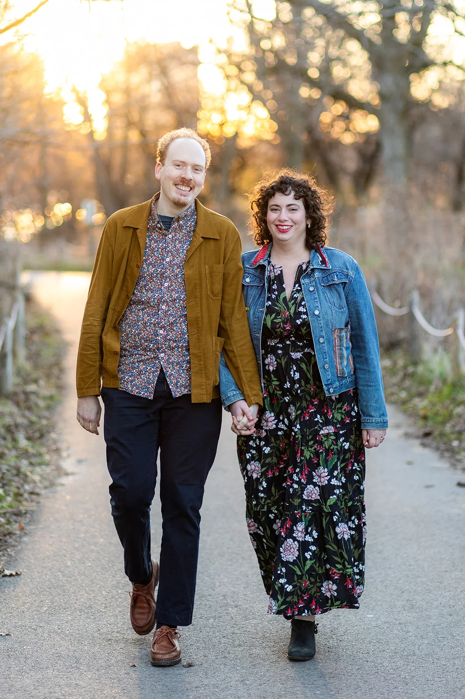
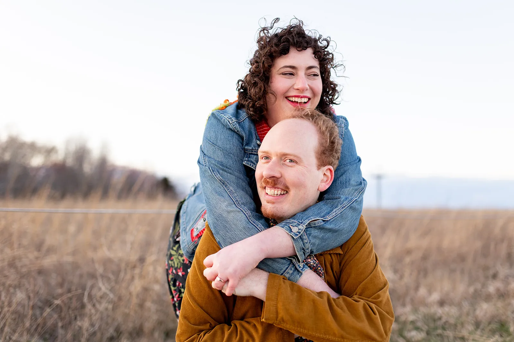
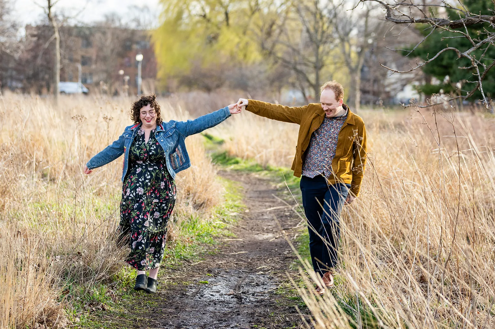
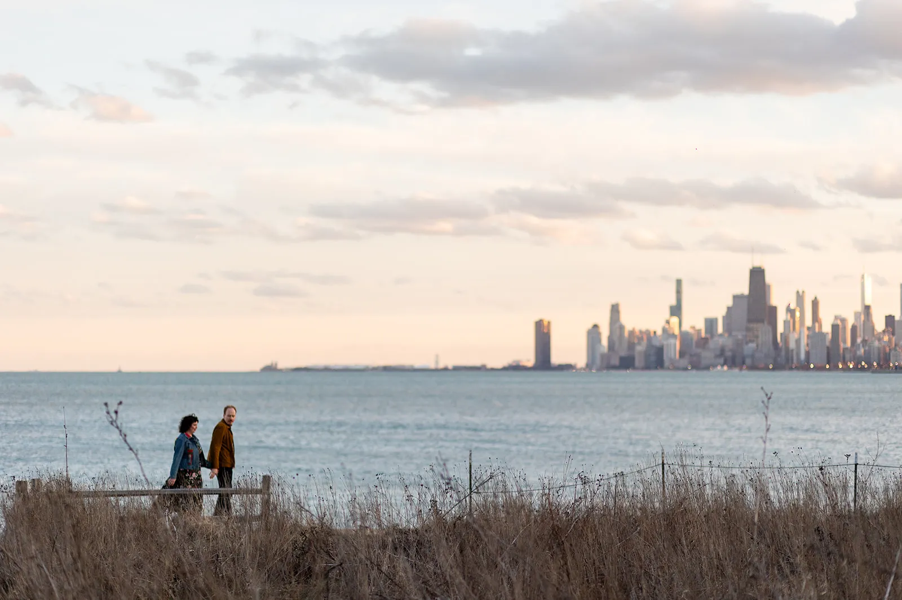
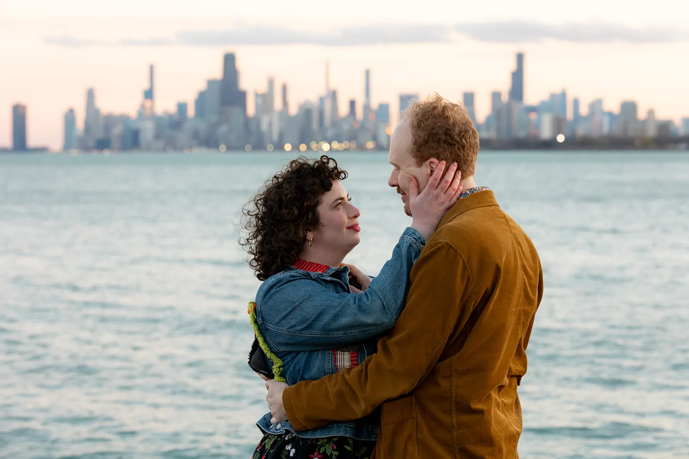
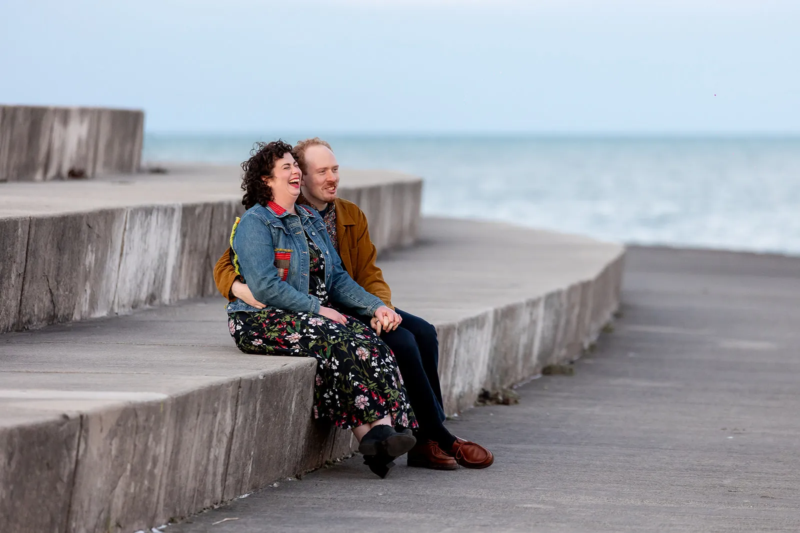
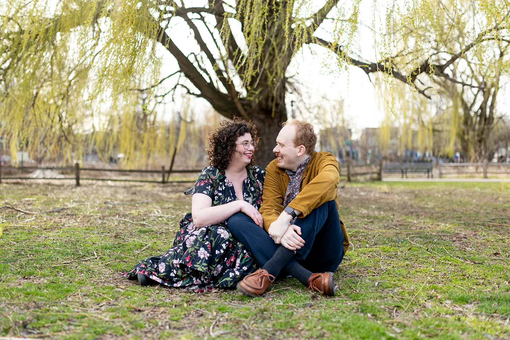
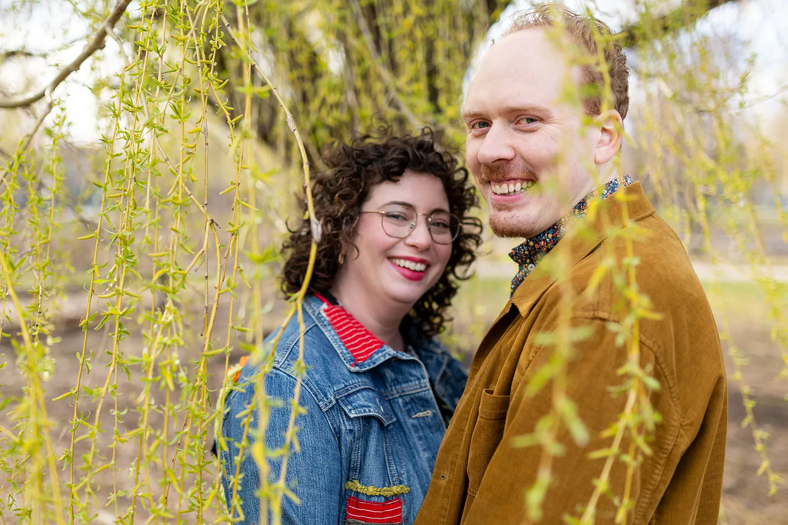
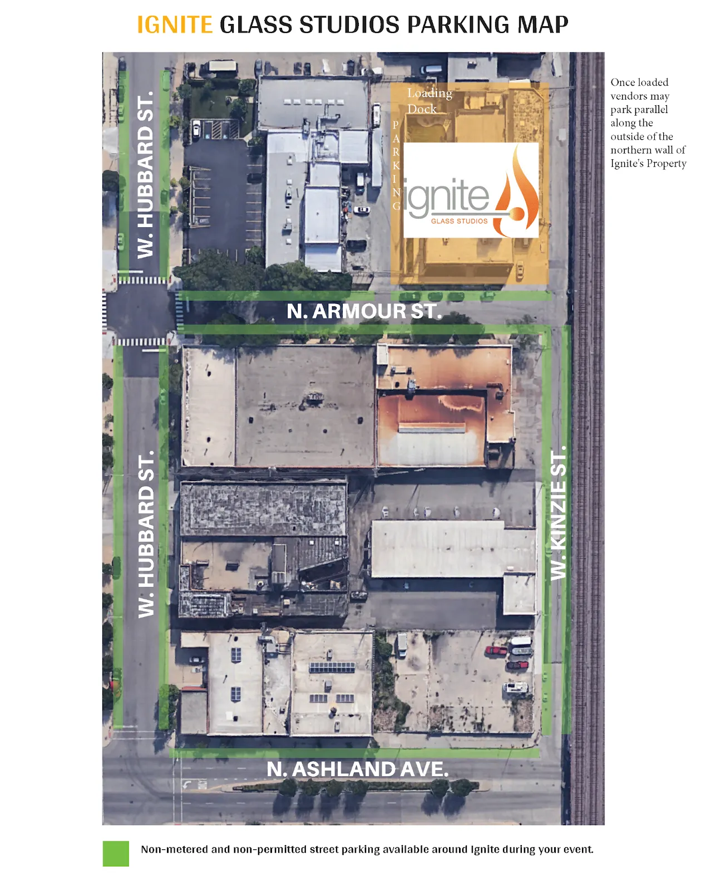

Festive summer cocktail attire requested.
What's that mean?
Weather allowing, the wedding and cocktail hour will be outdoors, dinner and dancing will be indoors. There will be grass, plan shoes accordingly.
The ceremony on Friday, June 28 will start at 6pm and will be followed immediately by a cocktail hour, dinner, and dancing in the same location.
There will also be an open house brunch for out-of-town guests on Saturday, June 29th, 10:30am to 12:30pm, upstairs at Goddess and the Baker's 165 W Superior St. location (make sure you go to the right location!). There will be breakfast + lunch sandwiches, coffee, pastries, and other things to nosh on as you start your day.
If you would like to change your RSVP for that event, you can do so on your RSVP form.
Answers to all of these questions and more are on the Travel page!
As of now we're not planning to provide transportation. We'd recommend sharing a Lyft, Uber, or taxi with other guests.
If you'd like to take public transit, the 65 Grand bus and 9 Ashland bus stop nearby and the Pink / Green line Ashland L stop is an 8 minute walk. Allow yourself extra time to arrive as transit frequency is unfortunately spottier these days.
Venue parking will be restricted, but there is free street parking nearby, just check the signs to ensure you're not in a permit zone. However, for out of town visitors and anyone planning on drinking, we'd recommend taking a rideshare like Uber or Lyft, or a taxi.

Sed cursus turpis vitae tortor. Curabitur nisi. In consectetuer turpis ut velit. Maecenas vestibulum mollis diam.
Check who your save the date or invitation was addressed to. You should also see the option when RSVPing if we included a plus one. If you think there was a mistake, let us know.
Unfortunately due to headcount restrictions (and the fact that our rain plan involves a room full of fragile art glass), we can't accommodate guests under 18 at our wedding.
For those of you with children, we're researching childcare suggestions and will update this space with those soon.
Nope, our venue does not permit animals unless they are a service animal.
Food will be buffet-style from Lula Café, a favorite of ours. If you have a specific dietary restriction, please let us know in your RSVP and we'll work with them to make sure you're accommodated!
We met at a St. Patrick's Day party in 2016 that Brian's (and now Allison's) friend Lauren was hosting. Allison had recently moved to Chicago and her childhood friend Mallorie was dating someone at the time who worked with Lauren in Wisconsin in the past. It was true serendipity!
First of all, just coming is truly enough, we know it's not an insignificant amount of time and money just to attend!
We have a registry on Joy here.
Our address is:
4948 N Wolcott Ave.
Apt 1
Chicago, IL 60640
If you send something, make sure to let us know who it's from!
You can email us at thecouple@lewislangelove.day.